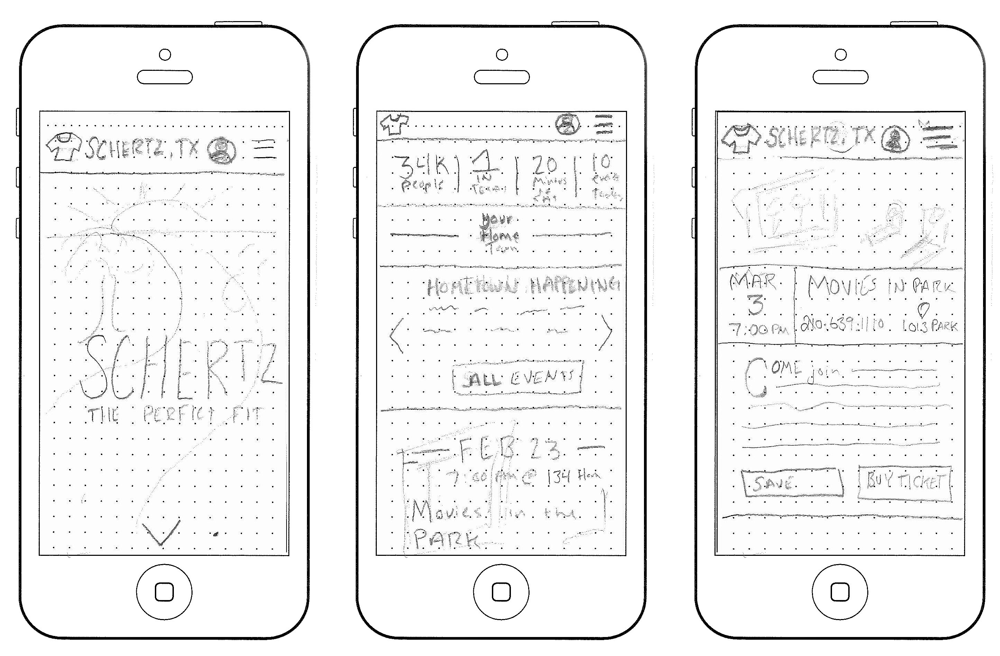
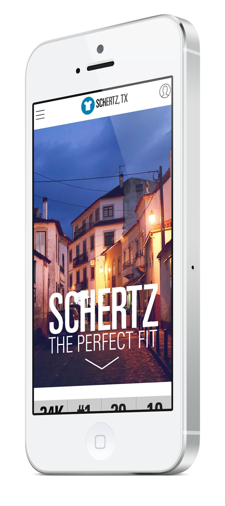
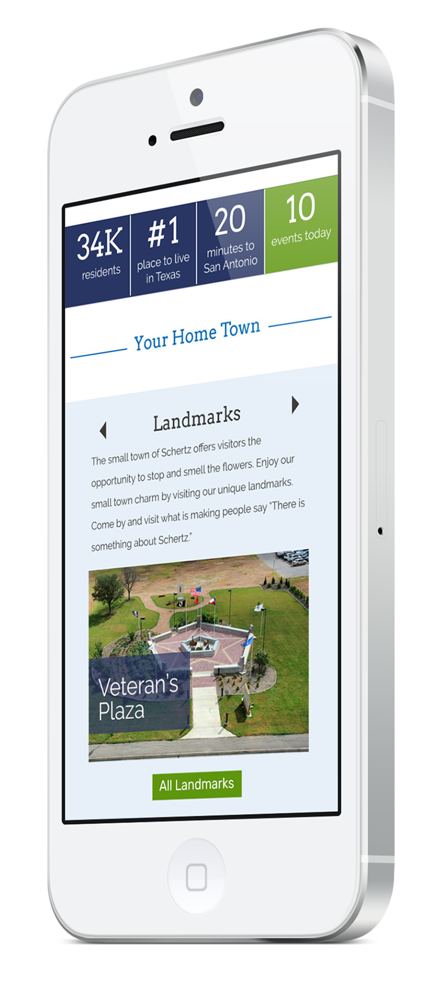
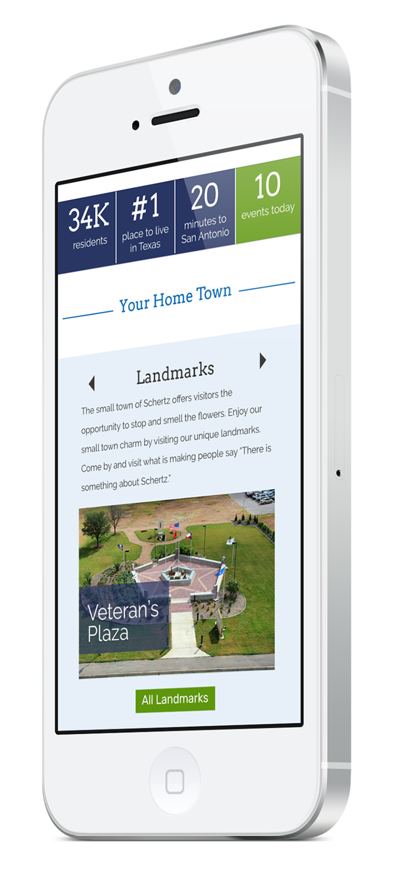
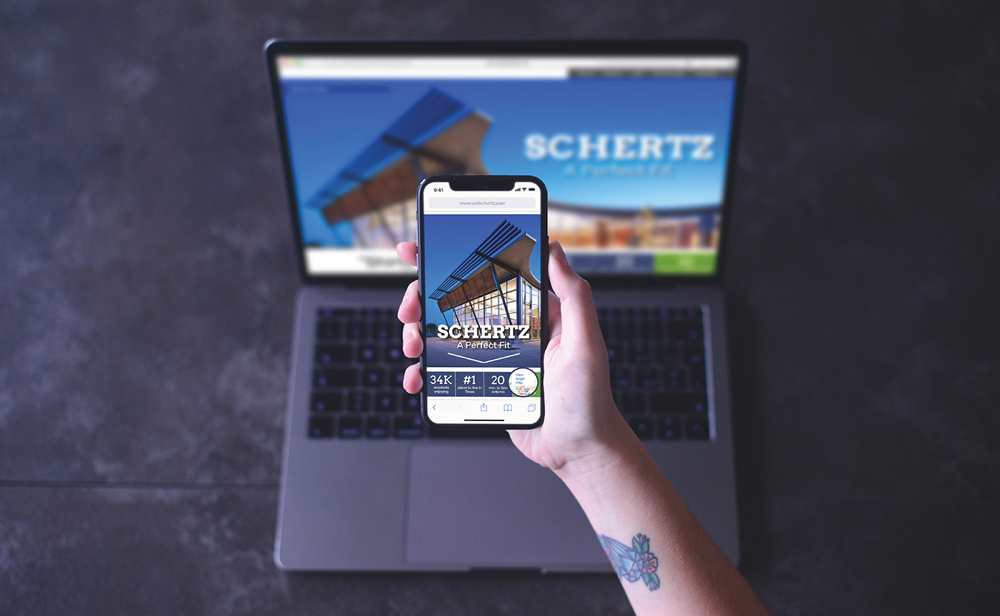
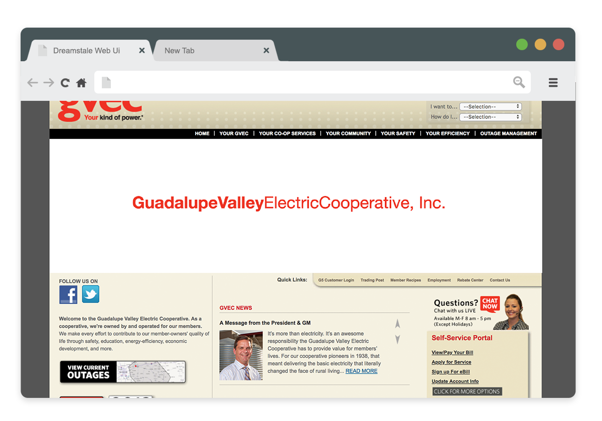
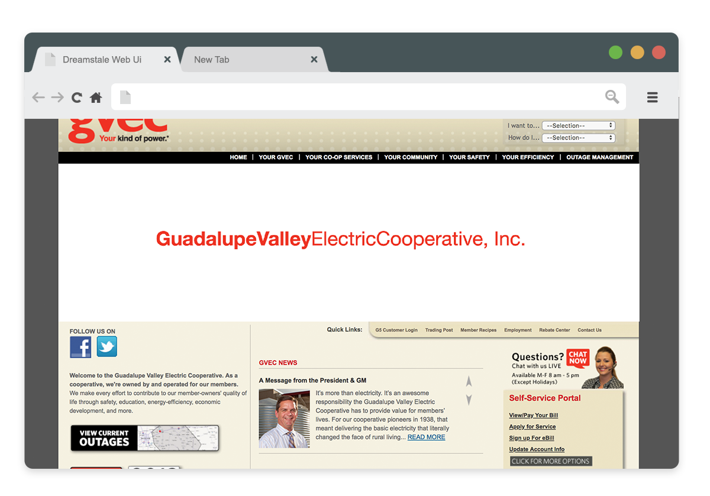
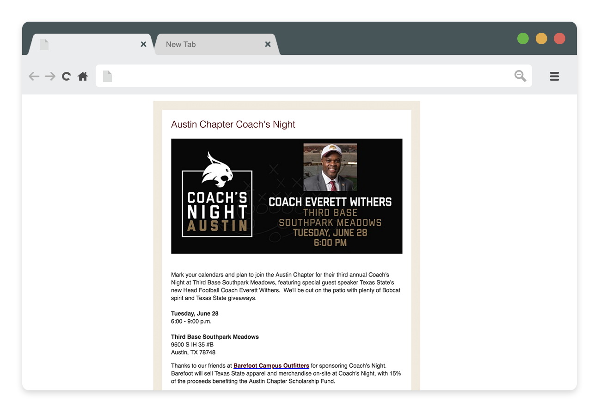
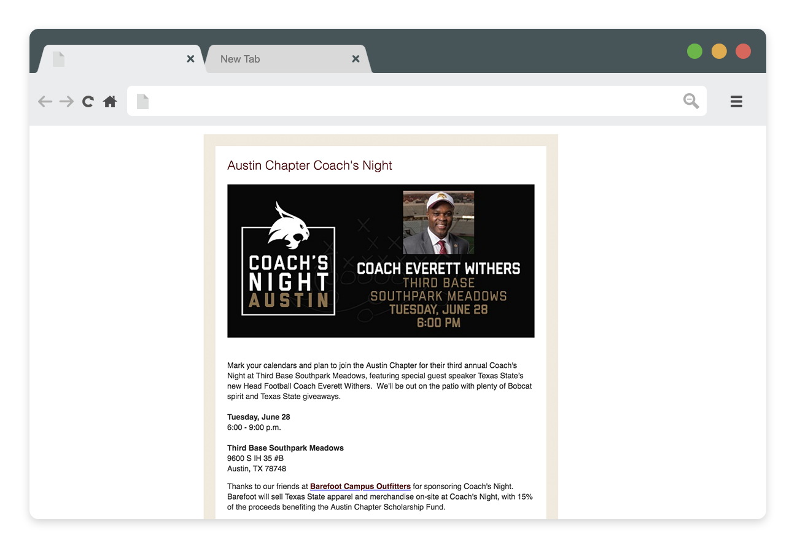

Finding a Fit
Schertz, founded in 1843, is located northeast of San Antonio and is nationally recognized for its family atmosphere, foresight and innovation, and commitment to workplace opportunities. However, their tourism site was lacking the excitement and innovation for which Schertz is known.
Sew Be It
Utilizing The Sprint method, a five-day process that helps solve design problems quickly by determining the problem, answering critical questions, protoyping and testing ideas with final users, a clear path was identified resulting in the final outcome.
Goals
The goal was identified to increase the number of visitors, entice new residents and attract prospective businesses by being the go-to-guide for local culture and events.
Questions
- How might we use events to encourage residency?
- How might we cater to different demographics?
- How might we plan an experience for visitors?
Sketches
With mobile-first in mind, sketches were created and then user tested, helping create the final layout to move into wireframing.

Wireframes
Unbranded and then fully-branded wireframes were tested to determine the success of both the UX/UI of the responsive site.


 

Try It On
Final Outcome
A responsive website, with a clear voice, showcases the many events that the City of Schertz has to offer—allowing residents and visitors alike to sort and search by what interests them.

 



 
